Домашнее задание занимает весь вечер
Ребёнок долго сидит над одной задачей, нервничает
и постоянно просит помощи.
Персональный ИИ-репетитор, который помогает разобраться в школьной программе, объясняет задания по фото и отвечает на вопросы столько раз, сколько потребуется.
Ребёнок долго сидит над одной задачей, нервничает
и постоянно просит помощи.
Новую тему объяснили слишком быстро, а ребёнок постеснялся переспросить.
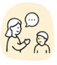
Но школьная программа давно забылась, а ваши объяснения ребёнку не подходят.
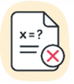
Решение можно переписать,
но решить похожую задачу ребёнок всё ещё не может.
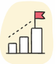
Без понимания базовых тем каждая следующая глава становится сложнее.
А урок с репетитором или консультация учителя будут только через несколько дней.
Я рядом каждый день: объясню тему простыми словами,
разберу задачу по шагам и покажу ошибку. Не понял —
объясню иначе, спокойно и без осуждения.
Ребёнок пишет вопрос своими словами или выбирает предмет и тему.
Ника распознает условие задачи и поможет разобраться,
с чего начать решение.
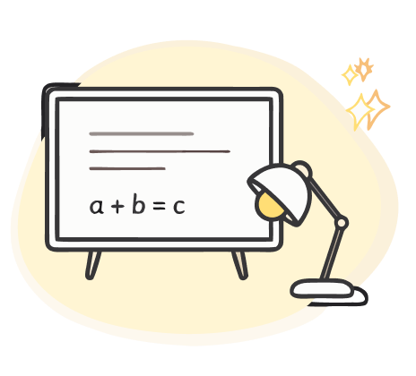
Ника разбирает тему последовательно, приводит примеры и объясняет логику решения.
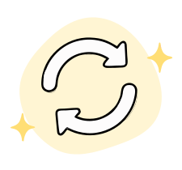
Можно попросить более простое объяснение, другой пример или подробный разбор.
Чтобы найти x, нужно перенести тройку
в правую часть уравнения, изменив знак:
x+3=8
x=8−3
x=5
Представь, что уравнение — это весы.
Слева лежит неизвестная коробка и ещё 3 кг,
а справа — 8 кг.
Чтобы узнать вес коробки, нужно убрать 3 кг
с левой стороны. Но тогда столько же нужно
убрать и справа, чтобы весы остались
в равновесии.
Поэтому:
x+3−3=8−3
x=5
Тройка не «перепрыгнула» через знак
равенства. Мы просто вычли 3 с обеих сторон.
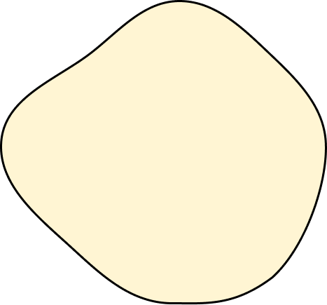
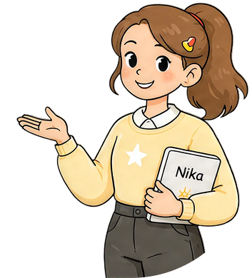
Ребёнок может переспросить
столько раз, сколько нужно,
без страха показаться
невнимательным.
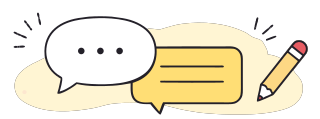
Не нужно формулировать запрос как в учебнике. Ребёнок может просто написать, что именно ему непонятно.
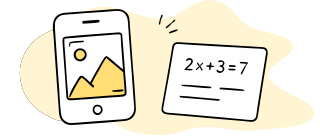
Можно сфотографировать домашнюю работу и получить помощь с условием, правилами и ходом решения.
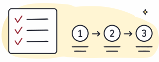
Ника помогает пройти путь от условия задачи до ответа, объясняя каждый этап.
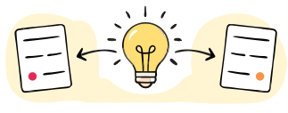
Если ребёнок не понял, Ника упрощает формулировку, приводит аналогию или показывает другой пример.
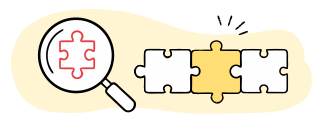
Если проблема связана с предыдущей темой, Ника поможет вернуться к базе и повторить необходимый материал.
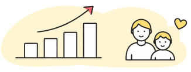
Родитель видит, какие темы ребёнок изучал и где ему потребовалась дополнительная помощь.
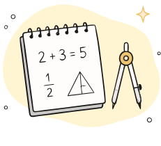
Задачи, дроби, уравнения, проценты, геометрия и другие темы школьной программы.
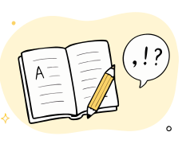
Правила, разбор предложений, части речи, орфография и работа над ошибками.
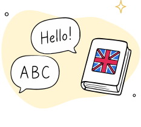
Грамматика, школьные упражнения, перевод, лексика и объяснение правил на понятных примерах.
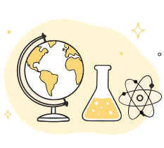
Ника поможет разобраться с физикой, биологией, историей и другими школьными темами — объяснит главное простыми словами.
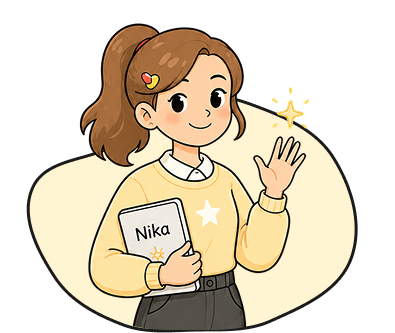
Ребёнку не нужно переключаться между разными сервисами и искать отдельного помощника для каждого предмета.
| Критерий | Ника | Поиск в интернете | Универсальный ИИ | Репетитор |
|---|---|---|---|---|
| Доступность в момент возникновения вопроса | Да | Да | Да | По расписанию |
| Можно отправить фото задания | Да | Ограниченно | Зависит от сервиса | Да |
| Можно попросить объяснить другим способом | Да | Нужно искать новый материал | Да | Да |
| Специализированный сценарий обучения | Да | Нет | Нет | Да |
| Помощь по нескольким предметам | Да | Да | Да | Обычно ограниченно |
| Прогресс для родителя | Да | Нет | Нет | Зависит от специалиста |
Ника не заменяет учителя или репетитора. Она помогает ребёнку в тот момент,
когда возник вопрос и нужно ещё раз разобраться в теме.
Не нужно каждый вечер проверять все задания и заново проходить школьную программу вместе с ребёнком.
Ребёнок сначала пробует
разобраться с помощью Ники.
В прогрессе видно, где ребёнку
потребовалось повторное объяснение.
Если сложности повторяются, родитель понимает,
на какую тему стоит обратить внимание.
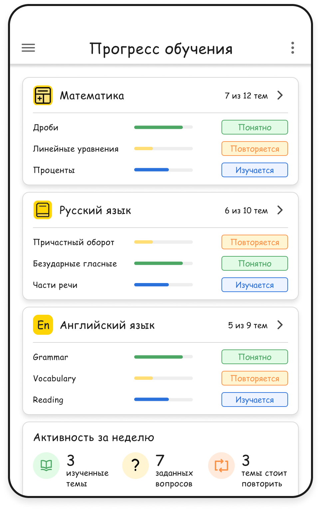
Следующий сложный вопрос
можно не откладывать
до следующего урока
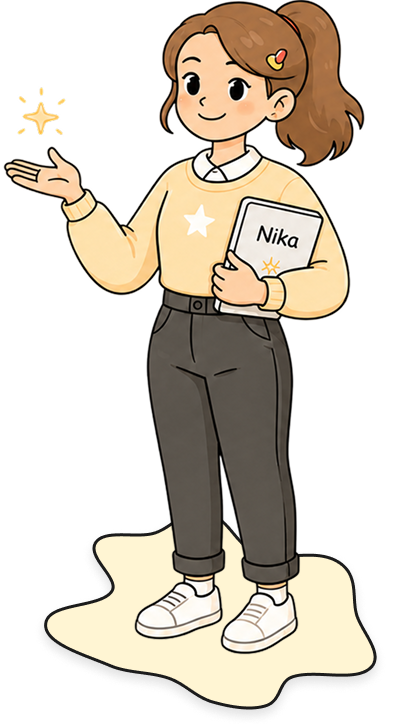
Доступ к Нике стоит 999 ₽ в месяц. Этого достаточно, чтобы ребёнок мог обращаться за помощью с уроками и школьными темами тогда, когда она нужна.
В первую очередь Ника помогает с математикой, русским и английским языком. Также можно задавать вопросы по другим основным предметам школьной программы.
Ника рассчитана на учеников 1–11 классов. Объяснение подстраивается под уровень ребёнка, чтобы не усложнять тему там, где можно объяснить проще.
Нет. Главная задача Ники — помочь ребёнку разобраться. Она объясняет решение по шагам, показывает логику и, если что-то осталось непонятным, может объяснить ту же тему по-другому.
Можно просто переспросить. Ника не ограничивает ребёнка одним объяснением: вопрос можно уточнять и просить разобрать непонятный момент другим способом столько раз, сколько потребуется.
Да. Необязательно перепечатывать условие вручную — ребёнок может сфотографировать задание и отправить его Нике, чтобы сразу перейти к разбору.
Зависит от того, какая помощь нужна ребёнку. Ника особенно полезна, когда вопрос возникает прямо во время домашнего задания или между занятиями с учителем. За помощью не нужно ждать следующего урока — спросить можно сразу.
Да. Подписку можно отменить, если решите, что Ника вам не подходит. Дальнейших списаний после отмены не будет.